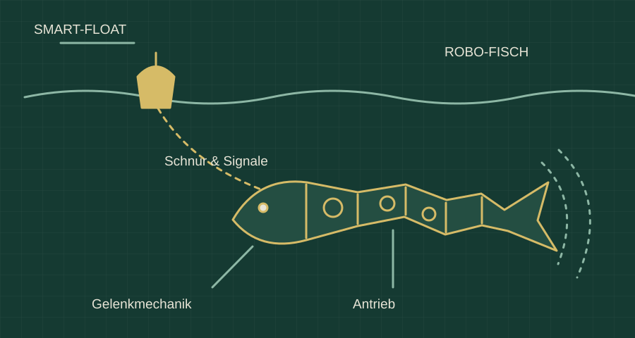

BSVRB / Mechafisch & Smart-Float
Mechafisch & Smart-Float
Bewegung verstehen. Signale verbinden.
Ein Robo-Fisch mit beweglichem Körper und eine vernetzte Boje bilden ein gemeinsames System. Die Entwicklung beginnt bei der Mechanik: Wie wird aus einer rotierenden Bewegung ein kontrollierter Flossenschlag?

Der erste Schritt: Mechanik an Land
Im Landprototyp werden ein Servohorn mit versetztem Dorn, eine geführte Nut und eine zweite Drehachse untersucht. Reibungsarme Lager und rückstellende Federn sollen die Bewegung prüfbar machen, bevor eine elastische Hülle und der Einsatz im Wasser hinzukommen.
Fisch und Boje als System
Der Smart-Float ist als Sensor- und Kontrollstation vorgesehen. Schnurspannung und Bewegungsimpulse verbinden ihn mit dem Robo-Fisch; akustische Signale von der Boje zum Köder sind ein weiterer untersuchter Kommunikationsweg.
Sensorik und Rückmeldung
Zum Konzept gehören Druck- und IMU-Sensorik für Tiefe und Bewegung sowie eine Rückmeldung über Zug oder Vibration. Antrieb, Signalübertragung und Rückholung werden als getrennte Aufgaben betrachtet.
Entwicklungsrichtung
Die nächsten Versuche betreffen eine wiederholbare Gelenkbewegung, Reibung und Rückstellung sowie die Erkennung von Signalen. Die Illustration zeigt das Systemkonzept; sie ist keine massstäbliche Bauzeichnung.